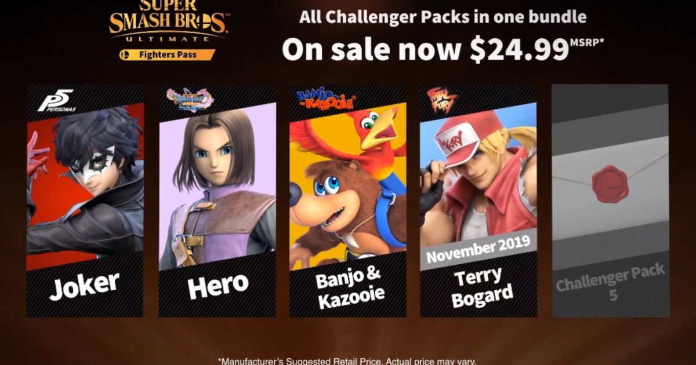

Si pour vous 69 personnages n'est pas assez, Nintendo a pensez a vous. En effet le jeu a d'abord proposer la Plante Piranha en dlc gratuit pour les personnes ayant acheter le jeu avec janvier 2019. Puis ils ont assez vite dévoiler le "fighter pass" un pack de 5 personnages allant chacun avec des musiques et un niveau provenant de leur jeu
Aujourd'hui le fighter pass n'a pas fini de sortir et seulement 3 des 5 personnages sont disponible a l'achat, et bientot le 4eme (deja annoncé) sera disponible

…
Fait le 01 octobre 2019